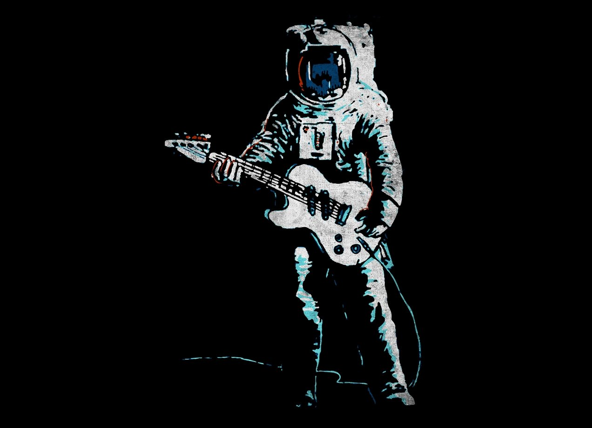
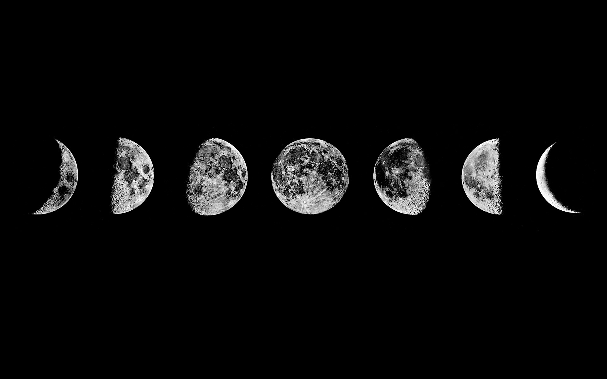
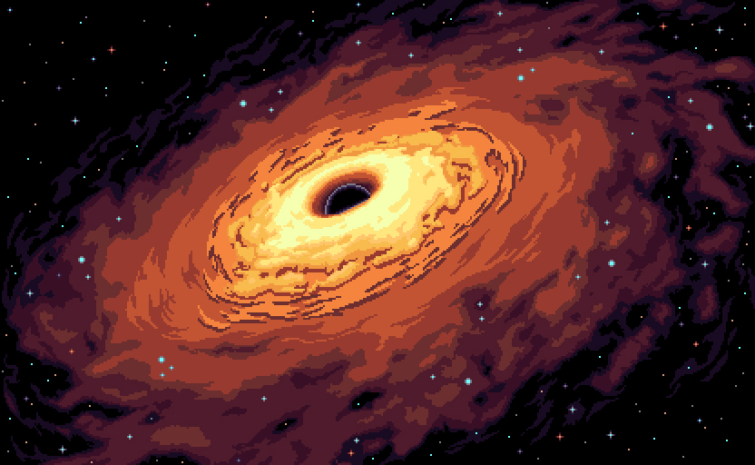
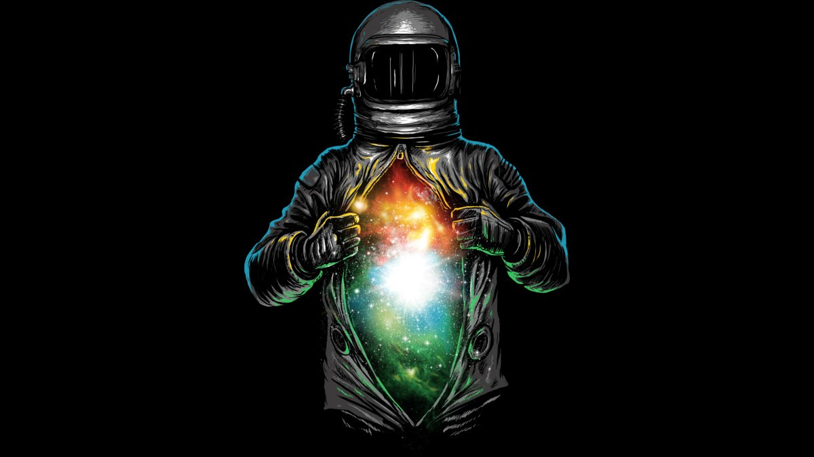

space myths you still believed in
we're gonna talk about the most common
myths in space that you still believed in .

Sounds in space
Every science fiction movie with an epic space battle has classic laser sounds and the explosions of those lasers blasting apart spaceships. But the reality is there's no sound in space.
Sound is actually a wave, and that wave needs a medium, like the Earth's atmosphere, to go from the source of the sound to your ears. In a vacuum,
without any medium for sound waves to travel through, there is no sound. Sorry George Lucas, Space battles are really really silent.

There is a dark side of the moon
Actually every part of the moon is illuminated at sometime by the sun. This misconception has come about because there is a side of the moon which is never visible to the earth.
This is due to tidal locking; this is due to the fact that Earth’s gravitational pull on the moon is so immense that it can only show one face to us.
Wikipedia puts it rather smartly thus: “Tidal locking occurs when the gravitational gradient makes one side of an astronomical body always face another; for example, one side of the Earth’s Moon always faces the Earth.
A tidally locked body takes just as long to rotate around its own axis as it does to revolve around its partner. This synchronous rotation causes one hemisphere constantly to face the partner body.

ALL BLACK HOLES ARE BLACK
Not all black holes are black , Some black holes power the brightest known objects in the universe, known as quasars . As material gets close to the event horizon it starts to speed up—and heat up—shining brightly until it passes through the event horizon.
Another reason why black holes don’t necessarily appear to be black is due to the way they distort time. From the point of view of someone far away, a spaceship heading towards a black hole will never—literally never—appear to reach it. So if a bright object heads towards a black hole,
its light will appear to float just outside the event horizon, getting redder and redder, and fainter and fainter, until it disappears. This is due to the phenomenon of red shifting

A human will explode in outer space without a space suit.
We've seen this movie where a person explodes when their space suit is removed. Outer space is deadly without a space suit,
but you won't explode. You'll actually die from lack of oxygen after about two minutes.